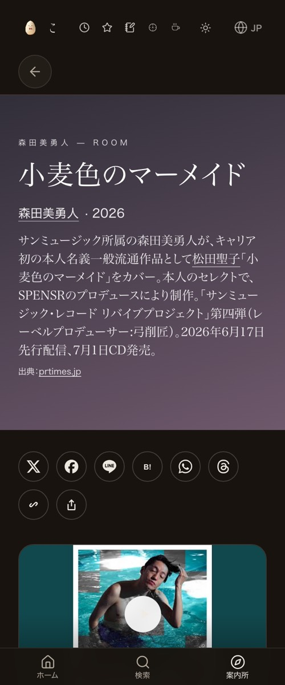
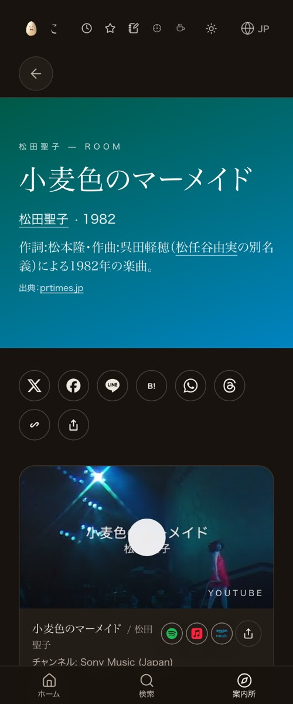

verify_click.mjsで自分で回し直すと両方PASS。原因は曲ページ側ではなく検品の仕組み側：①検品器は既知のサイト共通エラー(React #418・#35287で既存バグ確定)を除いて判定するのに、工場の回収側は既知込みで数えて不合格にしていた ②同ページは検品が時々固まる(CDP応答待ちに上限が無かった)。両方直し、既知のみ→合格／未知あり→不合格／内訳なし→従来どおり、の逆テスト3通りで確認。曲ページの接続(カバー側「オリジナルはこちら」＝松田聖子、原曲側「カバー」＝森田美勇人)は11-01のまま本番で生きている。棚には置いていない。


| 確認項目 | 結果 |
|---|---|
| カバー側：verify_click.mjs CLICK_VERDICT | PASS（16件中16件・既知issue1件はFAIL対象外） |
| 原曲側：verify_click.mjs CLICK_VERDICT | PASS（17件中17件・エラー0） |
| 工場側の回収関数(collect_touch_check)に実物JSONを通す | カバー側・原曲側とも合格 |
| カバー側本文に松田聖子・「オリジナルはこちら」 | 松田聖子18回・「オリジナルはこちら」1回（実測） |
| 原曲側本文に森田美勇人 | 12回（実測） |
| 既知のReact #418(サイト共通・#35287)の根治 | 未解決のまま（1434号で試行→SSR退行でrevert済み）。本件では除外扱い |